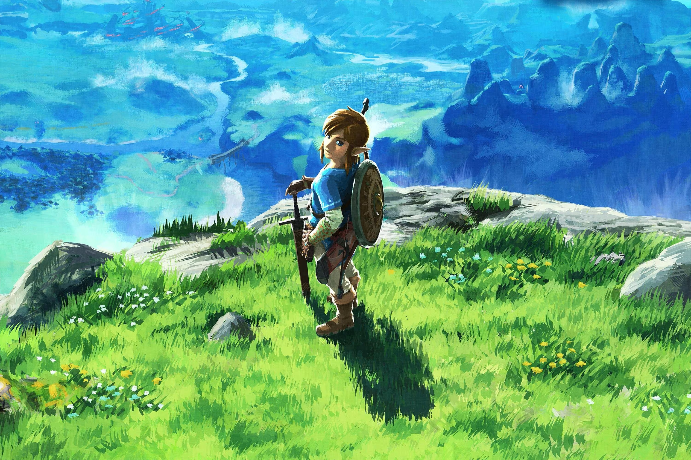

My Design Statement
For my web design project, I chose to go with Hyrule from one of my favorite Nintendo games "The Legend of Zelda" and thought this would be the perfect Fantasy world to come visit. The Legend of Zelda Breath of the Wild is the first ever Zelda game I have played since I bought a Nintendo Switch. I spend roughly about 200 hours of play time just to explore shrines, cook meals, do side-quests, and battle tough enemies. It was hard to choose which fantasy world to create for this midterm, so I went with Hyrule because it has a lot of fun places to explore and has a gorgeous atmosphere. I really poured my blood and sweat to find suitable images on google and a Zelda fandom website which is listed on the homepage.
I saved all the images on google and some on Zelda Fandom Wiki website. I tried to apply the master sword on the header page with all the menu icons, but it ended up not aligning. I decided to stick with just the seamless textures and kept the spinning Tri-force logo animation that I learned in class. I used all the codes that I learned from code academy and my previous assignments but made some new modifications.
CITATIONS